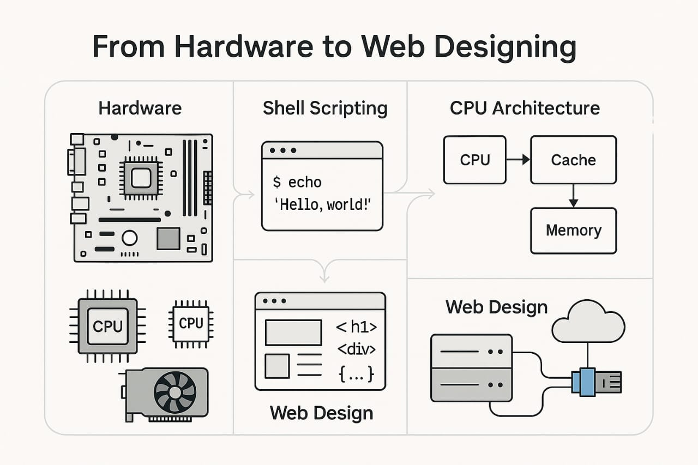

The foundations of computing encompass the fundamental principles and concepts that underpin the development and use of computer technology.It covers areas like hardware, software and all of which are essential for understanding how computers work and how they can be used to solve problems.

1. Hardware
This refers to the physical components of a computer, including the CPU, memory, storage devices, and input/output devices.
- Central Processing Unit (CPU): The "brain" of the computer, responsible for executing instructions.
- Memory (RAM): Temporarily stores data and instructions the CPU is using.
- Storage devices: Store data permanently, like Hard Disk Drives (HDDs) or Solid State Drives (SSDs).
- Input devices: Allow users to enter data (e.g., keyboard, mouse).
- Output devices: Display or produce information (e.g., monitor, printer).
2. Software
This refers to the programs and instructions that tell the computer what to do. Operating systems: Manage hardware resources and provide a user interface. Application software: Performs specific tasks, like word processing or web browsing.
3. Shell Scripting
It is a way to automate tasks in Unix/Linux systems using command-line scripts. It involves writing sequences of shell commands in a file (script) to perform repetitive tasks efficiently.
- Used for automation (file handling, backups, system monitoring)
- Common shells:*Bash (Bourne Again Shell), Zsh,Ksh.
- Scripts start with a shebang* (#!/bin/bash).
- Supports variables, loops, conditionals, and functions.
- Example: Automating log cleanup or software installation.
4. Assembly Language
Assembly is a low-level programming language that closely corresponds to machine code. It is specific to a computer architecture and provides direct hardware control.
- Used in embedded systems, firmware, and reverse engineering.
- Requires knowledge of CPU registers, memory addressing.
- Mnemonics represent machine instructions (e.g., MOV, ADD)
- Not portable (differs per processor: x86, ARM, MIPS). Example: Writing bootloaders or optimizing performance-critical code.
5. Web Designing
Web designing involves creating visually appealing and functional websites using front-end technologies. It focuses on layout, user experience (UX), and responsiveness.
- Core technologies:HTML, CSS, JavaScript.
- Frameworks:React, Bootstrap, Angular, Vue.js.
- Principles:Responsive design, accessibility, SEO optimization.
- Tools: Figma, Adobe XD, VS Code. Example: Designing an e-commerce site or a portfolio page.
6. Networks
Networking involves connecting devices to share resources and data. It includes concepts like protocols, topologies, and security.
- Types: LAN, WAN, MAN, VPN
- Protocols: TCP/IP, HTTP, FTP, DNS
- Devices:Routers, Switches, Firewalls
- Security:Encryption, Firewalls, VPNs Example: Setting up a corporate network or troubleshooting connectivity issues.